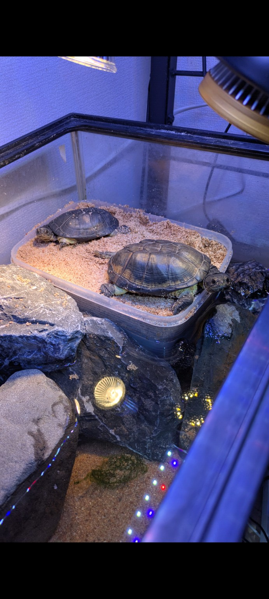
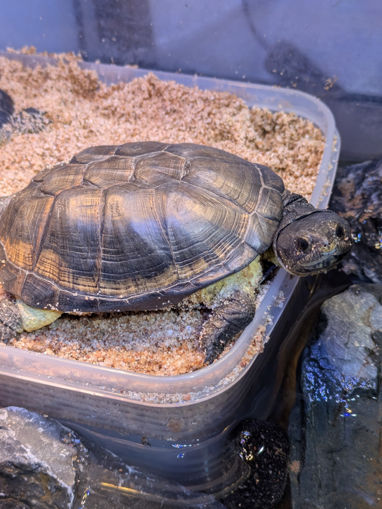
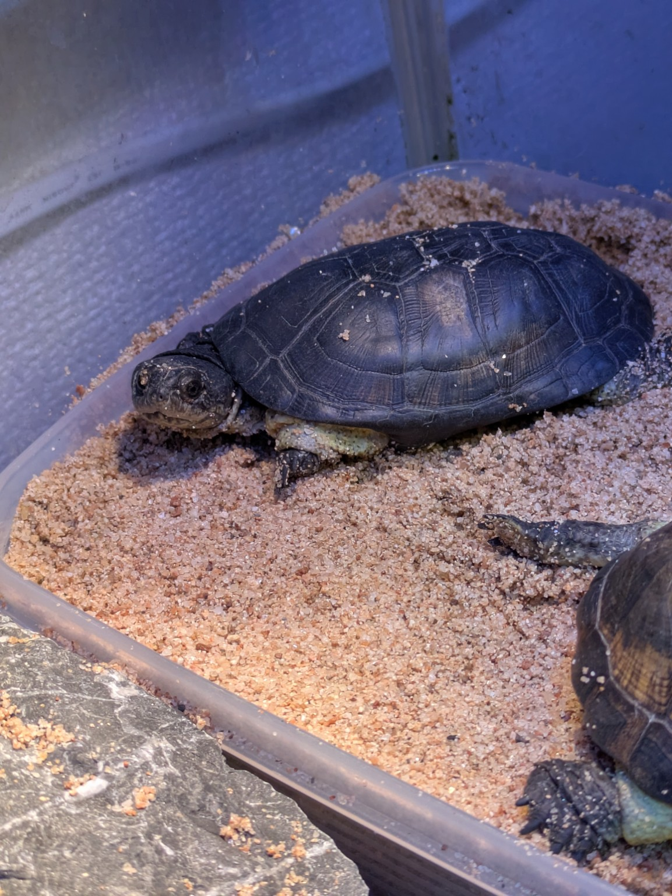
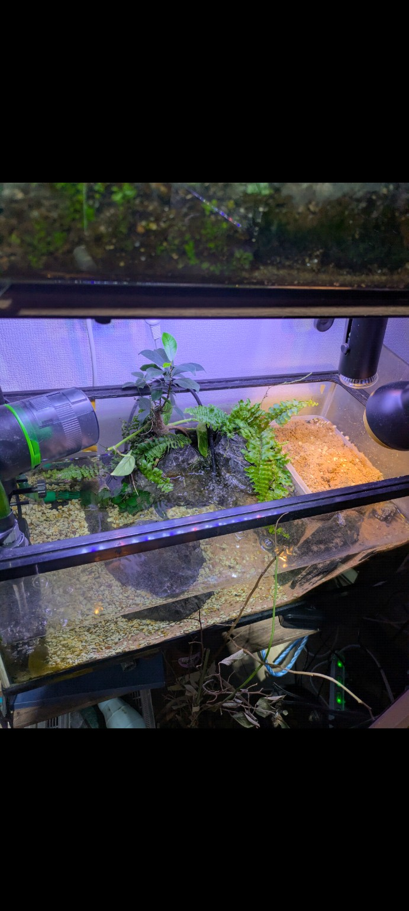

ヒメハコヨコクビガメは、見た目の可愛さに反して意外とパワフルで、陸場・水質・温度管理のバランスが重要な種類です。
ここでは、実際に私（TeTe）がペア飼育し、産卵まで確認した飼育環境をそのまま紹介します。
なぜこの実例を公開するのか
ネット上には一般的な飼育方法はたくさんあります。
でも実際に知りたいのは、
- 実際どのサイズの水槽で飼っているのか
- 本当に陸場を使うのか
- どれくらい汚れるのか
- オスはどれくらい追尾するのか
- 繁殖は起こるのか
このページでは一般論ではなく、私の実飼育記録を共有します。
飼育環境
Field Record — Setup
- 飼育数
- ペア（オス1・メス1）
- 水槽
- 60cmらんちゅう用水槽
- 水温
- 28℃
- 陸場温度
- 32℃
- 陸場
- タッパー製（深さ10cm）
- フィルター
- Eheim 2213
- エアレーション
- あり
- 水換え
- 週1回
- 給餌
- 2日に1回（自動給餌器）
- 主食
- カメプロスプレミアム大
実際の様子
ヒメハコヨコクビガメは水棲寄りと思われがちですが、実際にはかなり陸場を使います。
うちの個体は夜になると陸場に上がり、そのまま寝ています。
思ったより陸場依存が強いと感じています。




オスの追尾行動
オスはメスを追い回します。
ただ、うちの個体は極端ではありません。
行動パターン：
追尾する
しばらくアプローチ
飽きる
寝る
四六時中ストーカーするタイプではないため、現状ペア飼育は成立しています。
実際に産卵した
この環境でメスは実際に産卵しました。
Spawning Record
5産卵数
柔卵はやや柔らかい
✕結果：潰れた
つまり、
環境は産卵を起こすレベルで成立していた
しかし繁殖成功レベルにはまだ足りなかった
というのが正直な感想です。
改善点
1. 60cmペアは少し狭い
繁殖まで考えるなら90〜120cmが理想。
2. 産卵床が浅い
現在10cm。
理想は15〜20cm。
3. カルシウム管理
卵が柔らかかったため、
- カルシウム
- UV
- 餌の質
を見直したい。
TeTeの本音
ヒメハコヨコクビガメは可愛いですが、
思ったより本格派です。
向いている人:
- 水質管理できる
- 機材を揃えられる
- 繁殖も視野に入れたい
向いていない人:
- 放置飼育したい
- 小ケースで飼いたい
- メンテを減らしたい
この実例が参考になれば嬉しいです。